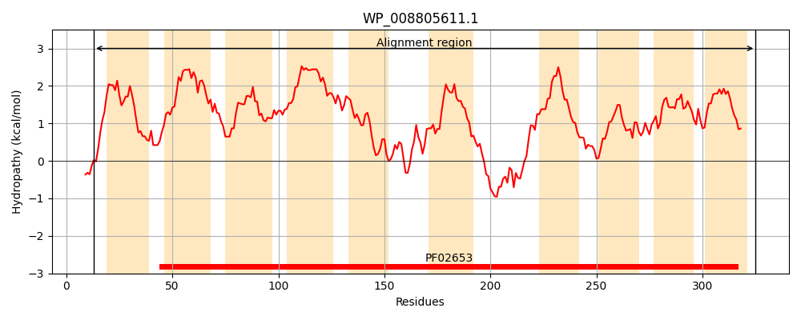
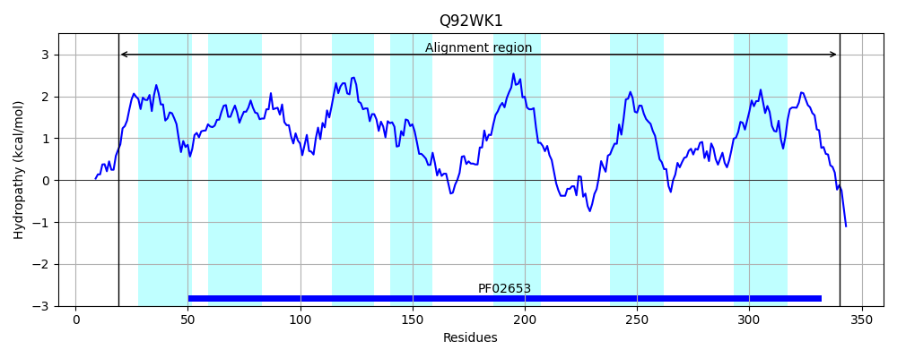
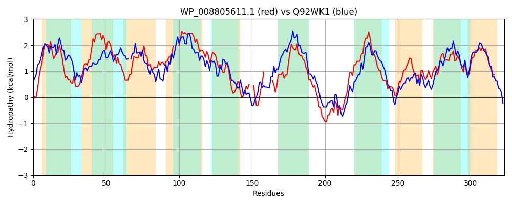

Hit Accession: Q92WK1
Hit TCID: 3.A.1.2.11
Hit Description: gnl|BL_ORD_ID|17247 gnl|TC-DB|Q92WK1|3.A.1.2.11 Probable sugar ABC transporter permease protein - Rhizobium meliloti (Sinorhizobium meliloti).
Mach Len: 323
e:0.000000
Query TMS Count : 10
Hit TMS Count: 7
TMS-Overlap Score: 6.350000
Predicted Substrates:CHEBI:4840;erythritol
BLAST Alignment:
Score: 329 , Bit scores: 131 bits, E-value: 1.9e-35, Alignment length: 323, Percentage identity: 28
Query: 13 LATLIEKFPLILFLALLVWLSVQSPYFLSWQNISLMLVQSVPLAILCFGLVCVIAVGGDDVVSGGIDLSLPATAVLGVALLSLGLAEWHTPYLLLLA---LLAAVCLLCGAINGFLVLAAGLPPLLATLSTSVAFTGLTDLLTGQRRIA--VSDPLMVA-----FRDNSVLGLPWPLIYLLGVFILFQFLLHHSRFGQHVQAVGGNRDMAQMSGLNVRRLTLLVWLLAGIAAGLAILPLLSQGSGSSSGTATPLLLETVLATFIGAAFSRRRVVTIWGALLGAILVNALSNGLGLLGVNIFWMGAIKGGLILVVLAASAVRHK 325
L TL++ I A++ + S+ +P FLS N+ LM A L G+ VI GG D+ G I + L G+ L + L +T Y ++ + AV ++ GA+NG L+ + P +ATL T G L +G + V P + +LGLP + L+ V + ++ ++ G+H+ AVGGN A+MSG+ V R+ + V++ +G A + L + S+ S T L + A +G TI G ++GA ++ LS+GL ++G++ FW IKG +I+V + + +
Sbjct: 19 LLTLMKLRTFIALFAVVAFFSIFAPNFLSTANLILMSKHVALNAFLAMGMTFVIITGGIDLSVGSI-VGLCGMVAGGLILNGIDLQFGYTVYFNVVEVCLITLAVGIVIGAVNGLLITKLNVAPFIATLGTLYVARGFALLSSGGQTFPNLVGKPELATTGFAFLGSGRLLGLPVSIWVLIVVALAAAYVARYTPIGRHIFAVGGNERAARMSGIRVDRVKMFVYMFSGFCAAIVGLVISSELMASHPATGNSFELNAIAAAVLGGTSMSGGRGTIGGTIIGAFVIGILSDGLVMMGISSFWQMVIKGIVIIVAVVVDQAQRR 340 | Protein Hydropathy Plots: |
|---|
|  |  |
Pairwise Alignment-Hydropathy Plot:
|
|---|
|  |